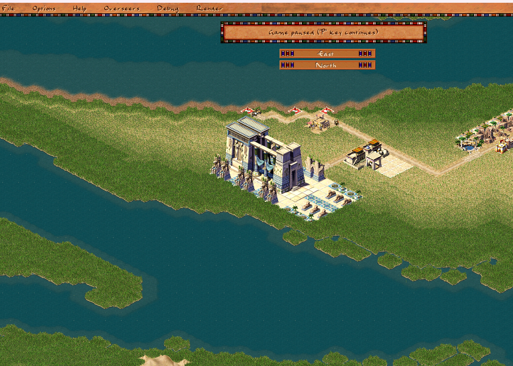
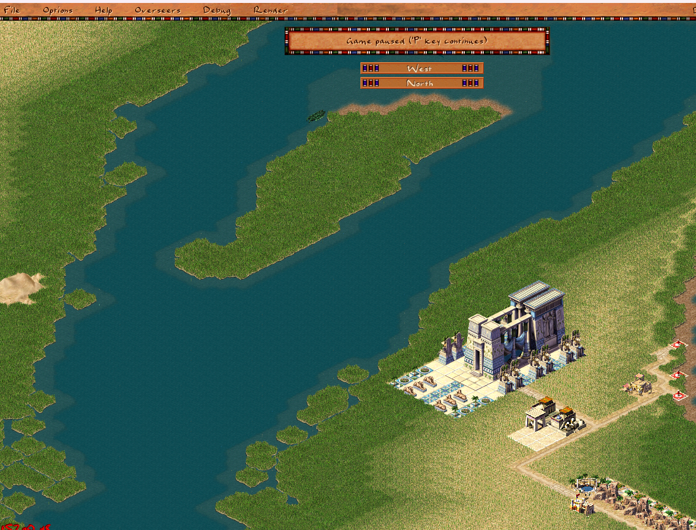
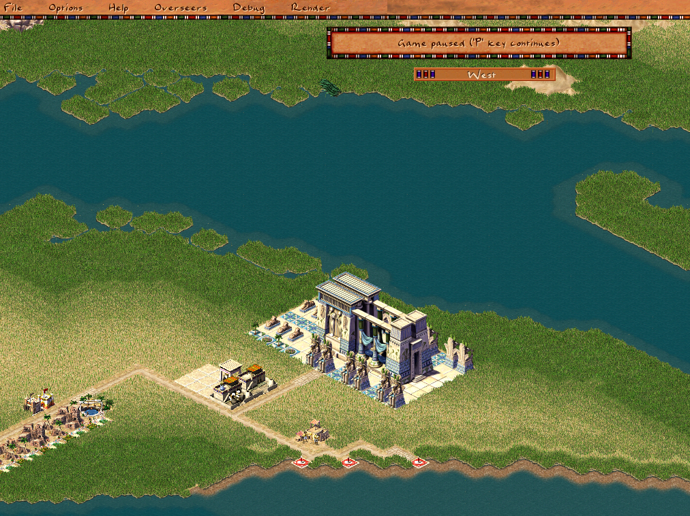
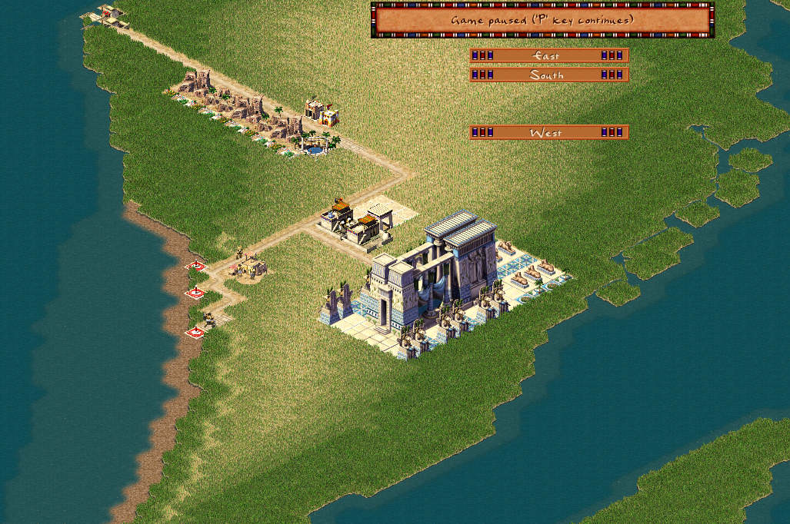

Temple complex
Temple complexes are now fully functional after a major refactoring effort spanning nearly two years. These massive religious structures — the largest buildings in Pharaoh — required extensive architectural changes to work properly in the Akhenaten engine.




Architecture Migration
The first major step (February 2024) created a dedicated building_temple class, extracting temple-specific logic from the monolithic common building class. This established the foundation for proper object-oriented handling of religious structures. Over 100 lines of scattered temple code were consolidated into a single maintainable class hierarchy.
Configuration System Migration
Temple complexes were among the first buildings migrated from hardcoded C++ to JavaScript configuration files. This involved moving:
- Image pack definitions — texture loading moved from
GROUP_BUILDING_*macros to config-basedimagepackentries - Animation offsets — each god's temple (Ra, Ptah, Seth, Bast) has unique sprite positions that were previously hardcoded
- Orientation variants — temple complexes render differently based on map rotation (north/east/south/west views)
The migration touched over 30 commits, with texture packs for Ra, Ptah, Seth, and Bast temples each requiring separate configuration work. Animation position fixes were particularly tricky — Seth temple's work animation offset was wrong, Bast temple had broken animations, and Ra temple needed correct positioning data.
Preview and Placement Logic
Temple complexes are multi-tile structures with complex placement rules. The refactoring (February 2025) moved preview logic from the global planner into specialized building_temple_complex methods:
can_place()— validates terrain, checks for existing temples, ensures proper spacingon_place_checks()— handles post-placement initializationupdate_map_orientation()— adjusts sprite rendering based on city rotation
The altar preview system required special handling to show the future position of the altar component before construction begins. This involved creating a building_temple_complex.h header with 54 lines of new class definitions.
Upgrade System
Temple complexes support two upgrade types: altar and oracle. Each upgrade changes the building's appearance and functionality. The upgrade system (January 2026) required:
building_temple_complex_upgradebase class for shared upgrade logicbuilding_temple_complex_altarandbuilding_temple_complex_oraclesubclassesattach_temple_upgrade()function moved from build planner to the upgrade class itself- Proper handling of
runtime_data().temple_complex_upgradesbitfield
The image rendering fix (January 6, 2026) was critical — upgraded temples now correctly switch between "base" and "fancy" sprite variants depending on which upgrades are installed. The oracle upgrade uses different sprites for north/south vs. east/west orientations, requiring orientation-specific logic in update_map_orientation().
Runtime Data Refactoring
Temple complexes store dynamic state in runtime_data structures. The March 2025 refactoring extracted temple-specific runtime data from the common building class into building_temple_complex:
struct temple_complex_runtime_data {
uint8_t temple_complex_upgrades; // bitfield: altar | oracle
tile2i *decorative_tiles; // statue/tile positions
int variant; // orientation variant
};This change touched 20 files and added 281 lines while removing 145 lines of duplicated logic. Monuments, statues, and work camps received similar treatment in the same commit.
UI and Information Windows
Temple complex info windows were migrated from hardcoded C++ to JavaScript-based UI scripts. The window_info_background function was renamed to init following the new UI convention. Coverage calculations for temple religious influence were corrected to properly account for temple complex size and upgrade status.
Gameplay Features
A new gameplay flag gameplay_change_multiple_temple_complexes allows missions to enable or disable multiple temple complexes per city. The unique building limit system now properly handles temple complexes alongside castles and mansions. The religion advisor window displays active/total temple counts.
Technical Details
Temple complexes consist of three main components:
- Main building — the central temple structure, 5×5 tiles
- Altar — 3×3 upgrade component, can be "fancy" (upgraded) or "base" (standard)
- Oracle — 3×3 upgrade component with orientation-dependent sprites
The rendering order matters: decorative tiles render first, then the main building, then upgrades. Each component calls map_building_tiles_add() with its own image ID calculated from config-based animation keys like "main_n", "fancy_e", etc.
Result
Temple complexes now work correctly with proper sprite rendering, upgrade handling, and multi-orientation support. The refactoring makes future religious building features (like additional upgrade types or new god temples) much easier to implement, since all logic follows a consistent class-based architecture rather than scattered global functions.